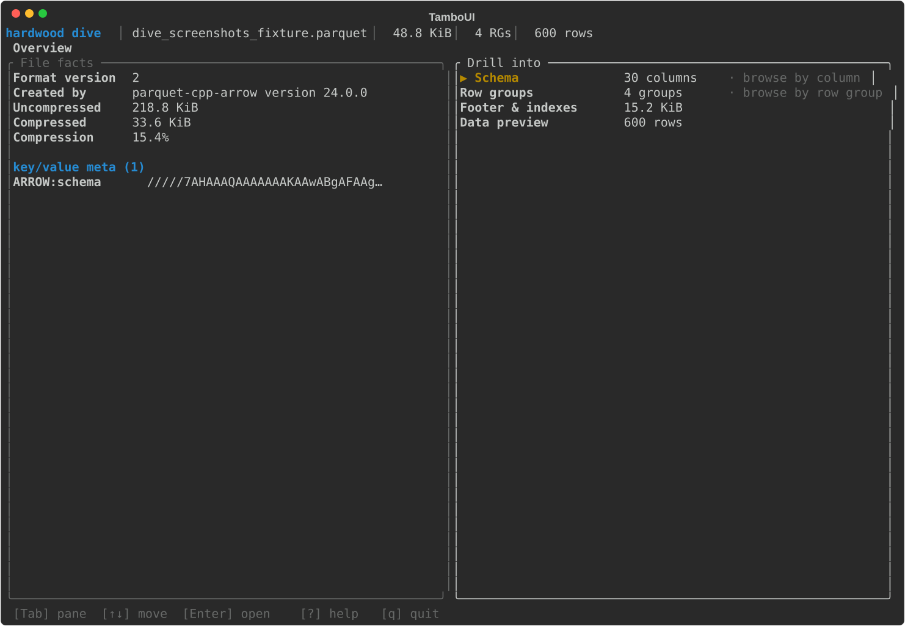
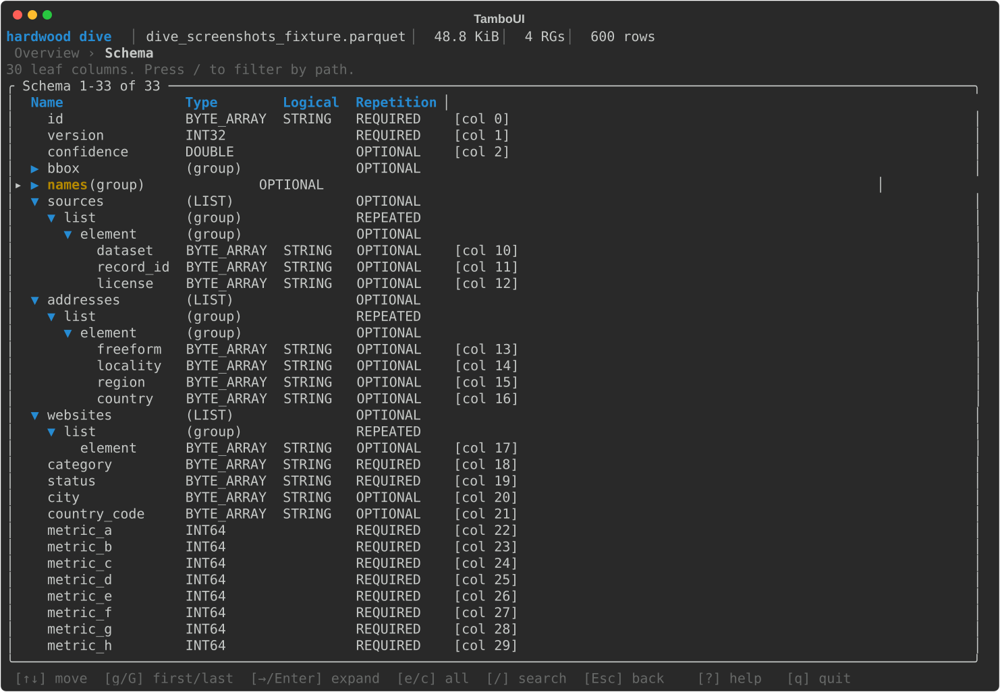
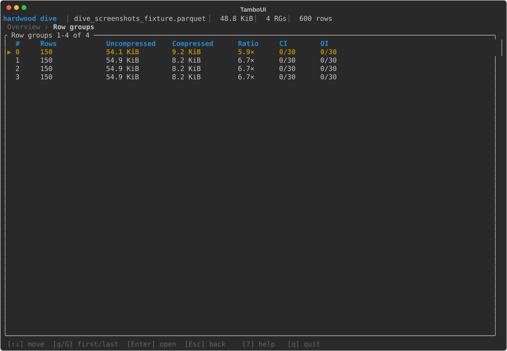
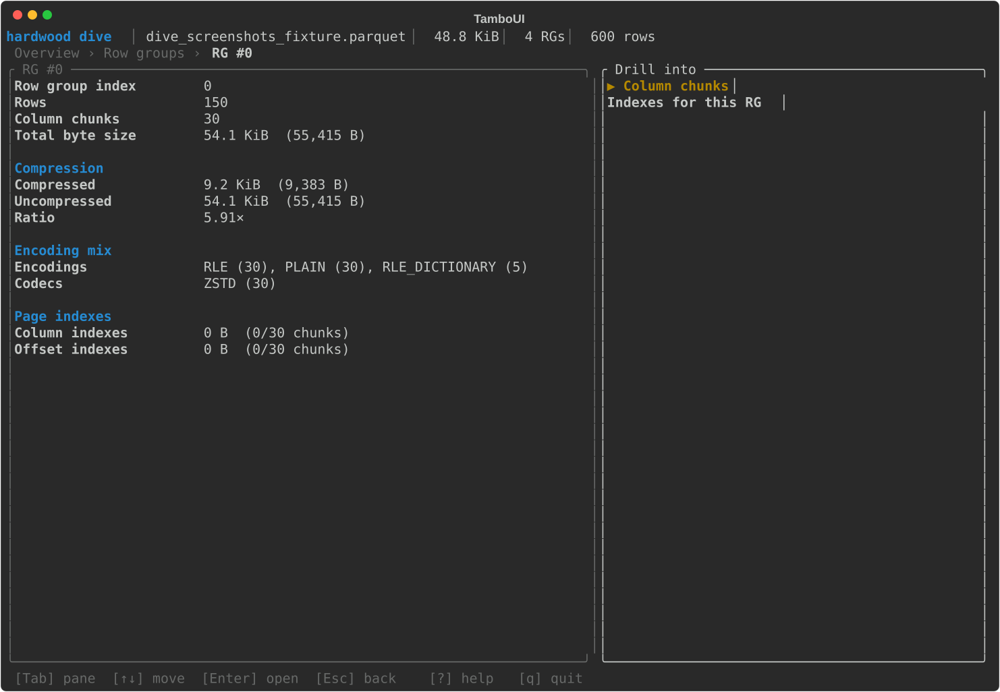
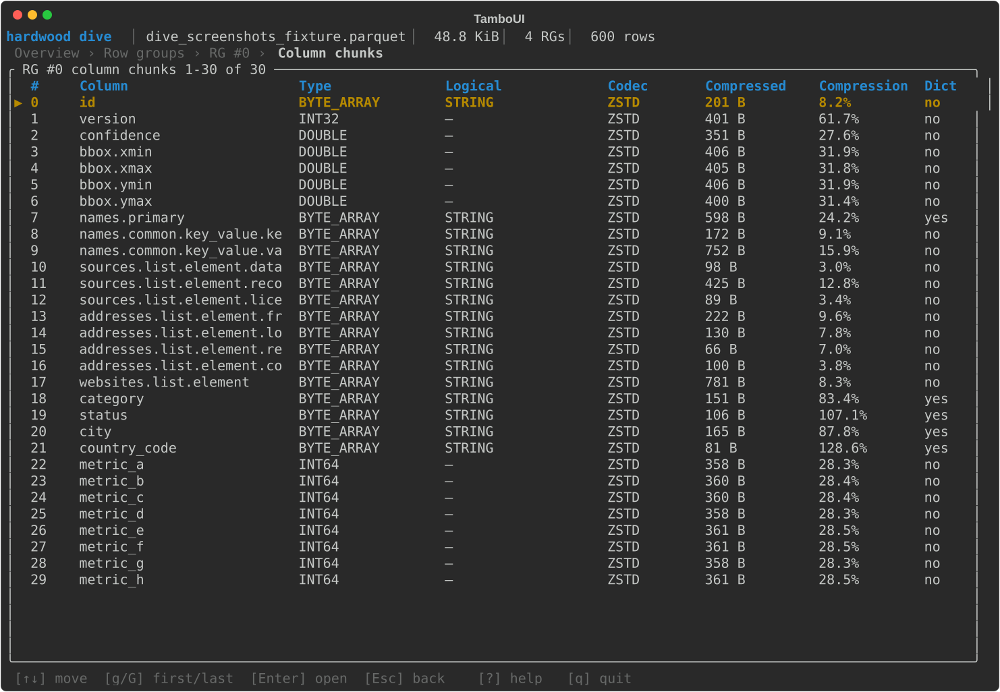
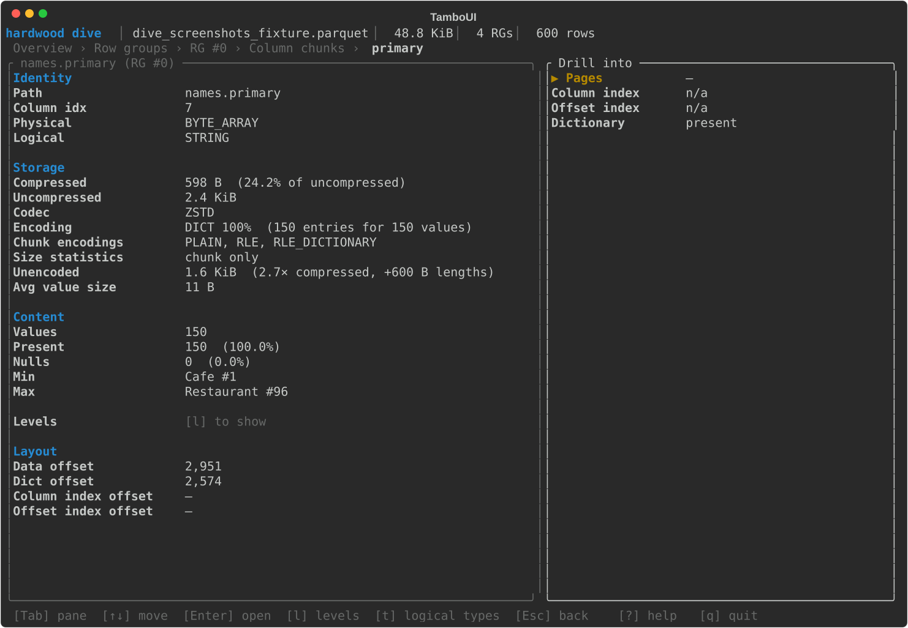
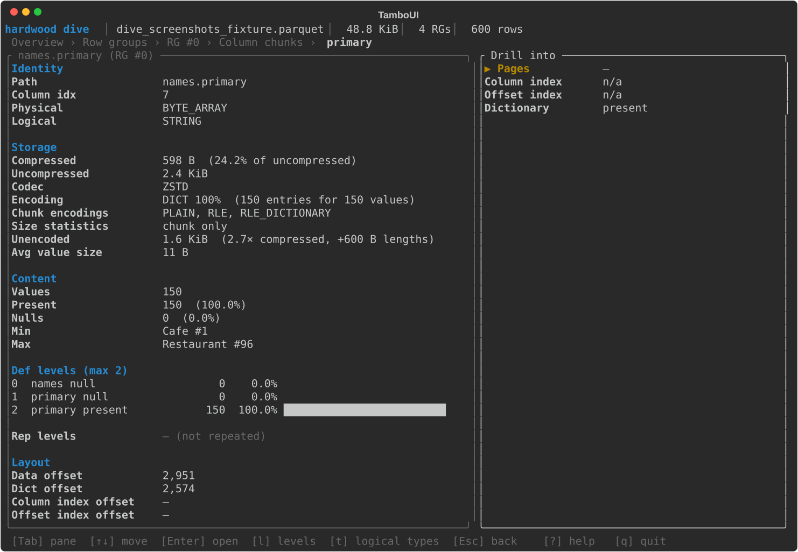
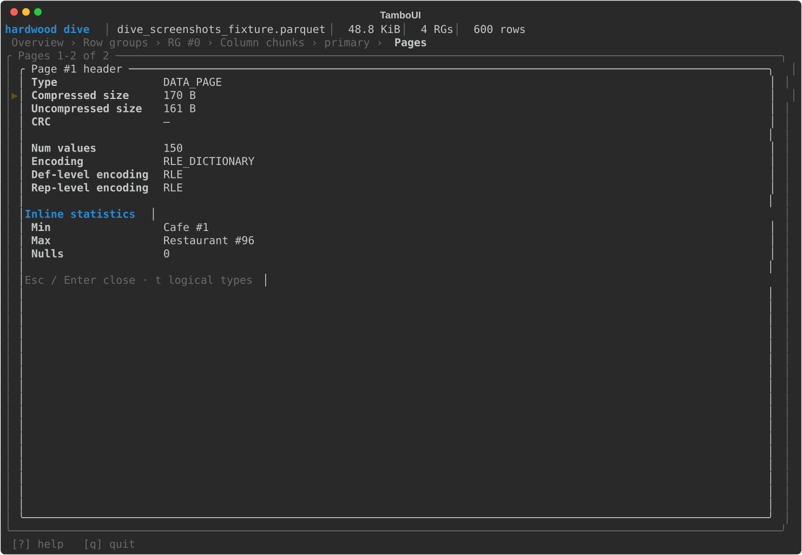
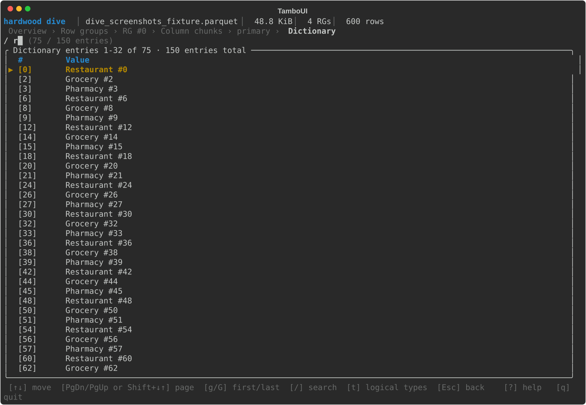
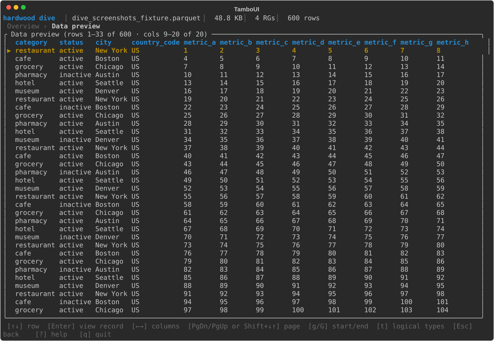

CLI¶
The hardwood CLI lets you inspect and convert Parquet files from the command line — useful for exploring datasets, debugging file structure, and quick format conversions without writing Java code. It reads local files and S3 URIs, and ships as a GraalVM native binary with instant startup.
Pre-built native binaries for Linux, macOS, and Windows are available from the release page. You can also run the CLI via Docker without installing it locally — see the Docker section below.
macOS
The binary is not notarized. On first run, macOS Gatekeeper will block it. Remove the quarantine flag after extracting:
Available Commands¶
| Command | Description |
|---|---|
hardwood info |
Display high-level file information, including key-value metadata |
hardwood schema |
Print the file schema, including logical-type annotations such as VARIANT(1) on Variant groups |
hardwood print |
Print rows as an ASCII table (head, tail, or all); Variant columns are decoded to JSON-like text |
hardwood convert |
Convert a Parquet file to CSV or JSON (head, tail, or all); JSON output writes numbers and booleans as JSON scalars and a null as null; Variant columns are emitted as a JSON string in CSV and as a native JSON subtree in JSON |
hardwood footer |
Print decoded footer length, offset, and file structure |
hardwood inspect pages |
List data and dictionary pages per column chunk; includes per-page min/max when the file has a page index |
hardwood inspect dictionary |
Print dictionary entries for a column |
hardwood inspect columns |
Rank columns by size, with each column's share of the file, its compression, its data-page encoding and dictionary cardinality, and its unencoded size |
hardwood inspect rowgroups |
Display per-row-group column chunk metadata (sizes, codec) |
hardwood dive |
Interactively explore a file's structure in a TUI |
Pass --help to any command (or hardwood --help) to print its usage.
Examples¶
# Show file overview
hardwood info -f data.parquet
# Print schema
hardwood schema -f data.parquet
# Print the schema as Avro or Protobuf
hardwood schema -F AVRO -f data.parquet
# Print the full value of one key-value metadata entry
hardwood info -f data.parquet --kv-key ARROW:schema
# Show first 20 rows
hardwood print -n 20 -f data.parquet
# Show last 5 rows
hardwood print -n -5 -f data.parquet
# Show all rows
hardwood print -f data.parquet
# Convert to CSV
hardwood convert --format csv -f data.parquet
# Rank columns by size: share of the file, compression, encoding, unencoded size
hardwood inspect columns -f data.parquet
# Per-row-group detail and named level histograms for one column
hardwood inspect columns -f data.parquet --column order.tags.list.element
# Restrict that detail to a single row group
hardwood inspect columns -f data.parquet --column order.tags.list.element --row-group 0
# Show dictionary entries for a column (first 50 entries per row group by default)
hardwood inspect dictionary -f data.parquet -c category
# Show all dictionary entries for a column (--limit 0 means unlimited)
hardwood inspect dictionary -f data.parquet -c category --limit 0
# Convert first 100 rows to JSON
hardwood convert -n 100 --format json -f data.parquet
# Convert last 50 rows to CSV
hardwood convert -n -50 --format csv -f data.parquet
# Convert to CSV, writing \N for null values
hardwood convert --format csv --null-string '\N' -f data.parquet
Convert output¶
hardwood convert --format json writes JSON numbers and booleans for
non-repeated BOOLEAN, INT32, INT64, FLOAT, and DOUBLE fields that
carry no logical annotation or an INT annotation. Date, time, timestamp,
decimal, UUID, interval, FLOAT16, INT96, byte-array, and nested values are
JSON strings.
Finite floating-point values are JSON numbers. NaN, Infinity, and
-Infinity are JSON strings, because JSON has no non-finite number values.
Unsigned integers are JSON numbers, including values above the signed 64-bit
range such as 18446744073709551615. A JSON parser that represents numbers as
IEEE 754 doubles — most JavaScript ones do — reads such a value at reduced
precision; a parser with a big-integer mode reads it exactly.
A null is null in JSON. In CSV it is an empty field, which an empty string
value also produces, so the two read the same. Pass --null-string VALUE to
write something else for a null; the CSV quoting rules apply to that value like
any other. --null-string is a CSV option — combining it with --format json
is an error.
--null-string covers whole fields and flattened struct leaves. A null nested
inside a rendered list, map, or struct cell is the text null in that cell. A
Variant holding the Variant null is the text null too: that is a value the
column carries, not an absent one.
Schema output formats¶
hardwood schema prints the Parquet schema in its native form by default.
-F AVRO and -F PROTO render it as an Avro schema or a Protobuf message
definition instead.
Avro names and Protobuf identifiers are both restricted to
[A-Za-z_][A-Za-z0-9_]*, while Parquet permits any name. Names outside that
grammar are rewritten in both formats: each character outside [A-Za-z0-9_]
becomes _, a leading _ is prepended to a name starting with a digit, and
names that collide within one record or message after rewriting get a _2,
_3, … suffix.
A rewritten name keeps its Parquet name in the output — as a doc attribute
in Avro:
and as a comment in Protobuf:
Key-value metadata¶
hardwood info prints a file's key-value metadata below the size summary, one
line per entry: the key, its value's byte length, and the value itself. Values
wider than 60 columns are truncated with a trailing …, since these routinely
carry kilobytes of embedded JSON (e.g.
org.apache.spark.sql.parquet.row.metadata) or a base64-encoded Arrow IPC
schema (ARROW:schema). Control characters in a value print as ·:
Key/Value Metadata (3):
ARROW:schema 4.1 KiB /////5AEAABAAAAAAAAKAAwABgAFAAgACgAAAAABBAA…
org.apache.spark.sql.parquet.row.metadata 1.8 KiB {"type":"struct","fields":[{"name":"order_i…
writer.build —
An entry may carry a key with no value at all, which is distinct from a key
whose value is empty. The size column tells the two apart: — for a value that
is absent, 0 B for one that is present and empty.
Pass --kv-key <name> to print one entry's value in full, untruncated and with
no substitutions, and no other output — safe to pipe into another tool:
--kv-key exits non-zero if the file has no entry under that name, or if the
entry has no value.
Binary values¶
A BYTE_ARRAY or FIXED_LEN_BYTE_ARRAY column with no logical-type annotation
carries bytes the schema gives no interpretation for — text from a writer that
omitted the STRING annotation, or an opaque payload such as WKB geometry, a
Protobuf message or a hash. Every command decides from the bytes themselves:
well-formed UTF-8 with no control characters prints as text, anything else
prints as 0x-prefixed lowercase hex. The same rule applies to values,
dictionary entries and min/max statistics alike, and to a byte-backed logical
type whose payload length rules out its own decoder.
Each table column holds 50 cells, and a value wider than that is cut with a
trailing …. print, inspect dictionary and inspect pages take -w N for
a different cap and --no-truncate for none at all; dive sizes its cells from
the terminal instead. convert carries the whole value.
# A GeoParquet 1.x geometry column: unannotated BYTE_ARRAY holding WKB
hardwood print -n 1 -c geometry -f places.parquet
# | 0x010100000000000000005366c0f71622f0fa1955c0 |
hardwood inspect pages -c geometry -f places.parquet
# | Min | Max |
# | 0x010100000000000000005366c0f71622f0fa1955c0 | 0x0101000000ffffb00000005366c0f71622f0fa1955 |
hardwood inspect pages -c geometry -w 20 -f places.parquet
# | Min | Max |
# | 0x0101000000000000… | 0x0101000000ffffb0… |
Interactive exploration (dive)¶
hardwood dive launches a terminal UI for interactively navigating a Parquet file's structure:
dive requires an interactive terminal. When stdin or stdout is not a TTY (e.g., a docker run without -it, or output piped to a file), it exits with an error instead of launching the UI.
What you can do with it¶
dive composes the slices that the batch subcommands (info, schema,
footer, inspect, print) each surface separately into a single
navigable session. Typical things to reach for it for:
- Find a column quickly in a wide schema — Schema screen,
/to filter the tree to leaves matching a substring. - Spot the heavy column chunks in a row group — Row groups → Column chunks ranks by compressed size with the codec and dictionary flag alongside. Schema → a leaf column → the row-group table does the same across row groups for one column, and adds its unencoded size.
- Check page-level statistics and indexes — drill from a chunk into
Pages, Column index, or Offset index;
Enteron a page opens the full thrift header, including inline statistics when no Column Index is present. - See where a column's size and nulls come from — Column chunk
detail groups its facts into Identity, Storage, Content and Layout.
Storage carries the unencoded size, what it expands to from disk, and
the encoding the data pages use with its dictionary's cardinality;
Content the record and present-value counts.
ladds the repetition and definition level histograms with each level named after the schema node it belongs to, so an absent field reads differently from an empty list. The pane scrolls with↑↓when it has focus; its title shows a line range whenever anything is below the fold. - Inspect dictionary entries for a column — Dictionary screen with
/substring filter;Enterreveals the full untruncated value of the highlighted entry. - Preview a few rows without exporting — Data preview paginates with
PgDn/PgUp(g/Gfor first/last);Enteropens a per-row modal. In the modal↑/↓step between the fields whose full value isn't already on screen,Enterexpands the focused one inline, andPgDn/PgUpscroll the body. - Decode key/value metadata — Spark JSON schemas pretty-print, Arrow IPC schemas decode to a hex dump.
- Compare a column across row groups — from Schema,
Enteron a leaf jumps to a one-row-per-RG view of that column's sizes, encodings, and stats. - Read raw file layout — Footer & indexes shows file size, footer offset, encoding/codec histograms, page-index coverage, and aggregate byte breakdowns; from there you can drill into a file-wide list of every chunk's column index, offset index, or dictionary region.
Keys¶
| Key | Action |
|---|---|
↑ / ↓ |
Move selection |
PgDn / PgUp (or Shift-↓ / Shift-↑) |
Page down / up; scroll the body of the Data preview row modal |
g / G |
Jump to first / last row |
Enter |
Drill into the selected item |
Esc / Backspace |
Go back one level |
Tab / Shift-Tab |
Switch focused pane |
/ |
Inline search (Schema, Column index, Dictionary) |
t |
Toggle logical / physical value rendering (screen-specific: Pages, Column index, Dictionary, Data preview, Column chunk detail) |
l |
Toggle the repetition / definition level histograms (Column chunk detail) |
↑ / ↓ |
Scroll the facts pane when it has focus (Column chunk detail) |
e / c |
Expand / collapse all (Schema tree; Data preview row modal) |
o |
Jump back to Overview |
? |
Toggle help overlay |
q / Ctrl-C |
Quit |
The keybar at the bottom of every screen lists the keys that are actually meaningful in the current context — so the menus above show the full vocabulary, but the keybar tells you which subset is live right now.
Available screens:
- Overview
- Schema — expandable tree of groups and leaves
- Row groups
- Row group detail
- Column chunks
- Column chunk detail — facts pane plus drill menu
- Pages — with a page-header modal on Enter
- Column index
- Offset index
- Footer & indexes — also drills into a file-wide list of every chunk's column index, offset index, or dictionary region
- Column-across-row-groups — from the Schema screen
- Dictionary — full-value modal on Enter and
/inline search - Data preview — row values via
RowReader;←/→scrolls the visible column window,PgDn/PgUpflips pages
A tour through the main screens (click any shot to open it full size):
{kind=link}

{kind=link}

{kind=link}

{kind=link}

{kind=link}

{kind=link}

{kind=link}

l — repetition and definition level histograms{kind=link}

{kind=link}

/ inline search{kind=link}

Every screen shares a four-region layout — a top bar with file identity, a breadcrumb showing the navigation stack, the active screen body, and a keybar (all four visible in the Overview screenshot above).
Typical drill path¶
- Overview → pick Row groups from the drill menu.
- Row groups → select a row, Enter — opens that row group's detail.
- Row group detail → Enter — opens its column chunks.
- Column chunks → select a column, Enter — opens the chunk detail.
- Column chunk detail (facts pane + drill menu) → pick Pages, Column index, Offset index, or Dictionary.
- Drill sub-screens (Pages, Column index, etc.) support Esc back up to the previous level; in Pages and Dictionary, Enter opens a modal with the full header / value.
Alternative entry: from Overview → Schema, navigate the tree of group and
primitive nodes with → / ←; Enter on a leaf drills into a
Column-across-row-groups view — one row per row group showing that column's
sizes, encoding, stats — and from there into the chunk detail.
Inline search¶
The Schema, Column index, and Dictionary screens support inline
search. Press / to enter search-edit mode:
- Schema — filters leaf columns whose field path contains the query. While the filter is active, the tree collapses to a flat list of matches.
- Column index — filters pages whose formatted min or max value contains the query.
- Dictionary — filters entries whose value contains the query.
In all three cases: typed characters extend the filter; Backspace trims; Esc clears the filter and exits edit mode; Enter commits (keeps the filter applied but exits edit mode). The table re-filters live as you type.
Reading Files from S3¶
All commands accept s3:// URIs via the -f flag:
The CLI resolves credentials via the standard AWS credential chain (AWS_ACCESS_KEY_ID / AWS_SECRET_ACCESS_KEY / AWS_SESSION_TOKEN environment variables, ~/.aws/credentials, SSO, EC2/ECS instance profiles, web identity). See the S3 module page for the resolution order and provider details.
The CLI additionally reads these environment variables:
| Environment Variable | Description |
|---|---|
AWS_REGION |
AWS region (also read from ~/.aws/config if not set) |
AWS_ENDPOINT_URL |
Custom endpoint for S3-compatible services (MinIO, LocalStack, R2, etc.) |
AWS_PATH_STYLE |
Set to true to use path-style access (required by some S3-compatible services) |
Shell Completion¶
The distribution includes completion scripts for Bash, Zsh, and Fish under bin/:
| Shell | Script |
|---|---|
| Bash | bin/hardwood_completion |
| Zsh | bin/hardwood_completion.zsh |
| Fish | bin/hardwood_completion.fish |
Source the one for your shell to enable tab completion for commands, options, and arguments:
To make it permanent, add the line above to your shell's startup file (e.g. ~/.bashrc, ~/.zshrc).
Use with AI coding agents¶
The repository ships an Agent Skill at skills/hardwood-cli/ that teaches an AI coding agent when and how to reach for the CLI while debugging Parquet read/write code (checking schema and physical/logical types, diagnosing why predicate pushdown or page skipping isn't happening, reading dictionary entries, and so on).
For Claude Code, it is packaged as the hardwood plugin, distributed from the hardwood-skills marketplace. Install it once — inside Claude Code, run:
After installing, the skill loads automatically in future sessions whenever a task involves a Parquet file. It drives the hardwood binary, so ensure hardwood is on your PATH (from the release page or the Docker image below).
For other agent harnesses — or a Claude Code setup without the plugin — copy skills/hardwood-cli/SKILL.md into that tool's skills directory (for Claude Code that is ~/.claude/skills/hardwood-cli/).
Docker¶
A minimal Fedora-based Docker image is published to the GitHub Container Registry for Linux amd64 and arm64:
Run any command by passing it after the image name:
docker run --rm ghcr.io/hardwood-hq/hardwood:1.0-early-access --help
docker run --rm ghcr.io/hardwood-hq/hardwood:1.0-early-access info -f /data/data.parquet
Mount a local directory to access files on the host:
docker run --rm \
-v "$(pwd)":/data \
ghcr.io/hardwood-hq/hardwood:1.0-early-access \
schema -f /data/data.parquet
The dive TUI needs an interactive terminal, so pass -it:
docker run --rm -it \
-v "$(pwd)":/data \
ghcr.io/hardwood-hq/hardwood:1.0-early-access \
dive -f /data/data.parquet
Start an interactive shell with tab completion pre-loaded: